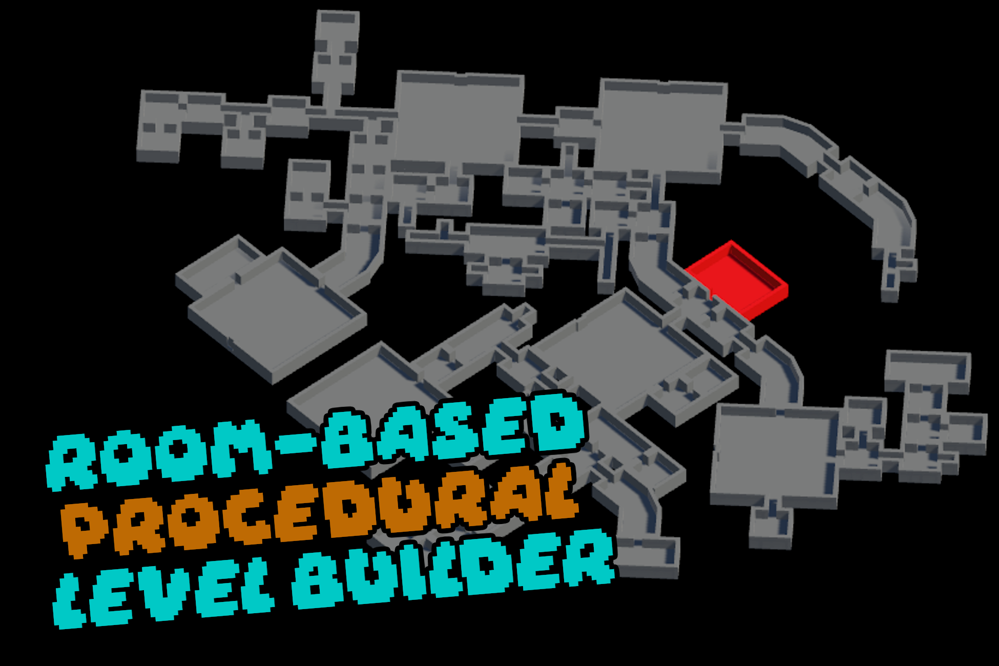
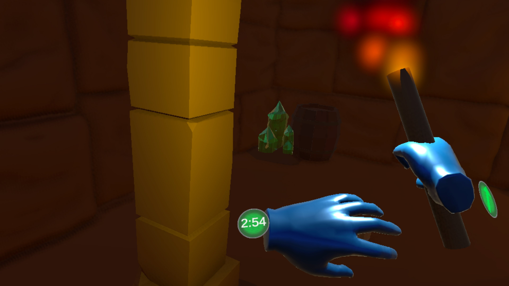
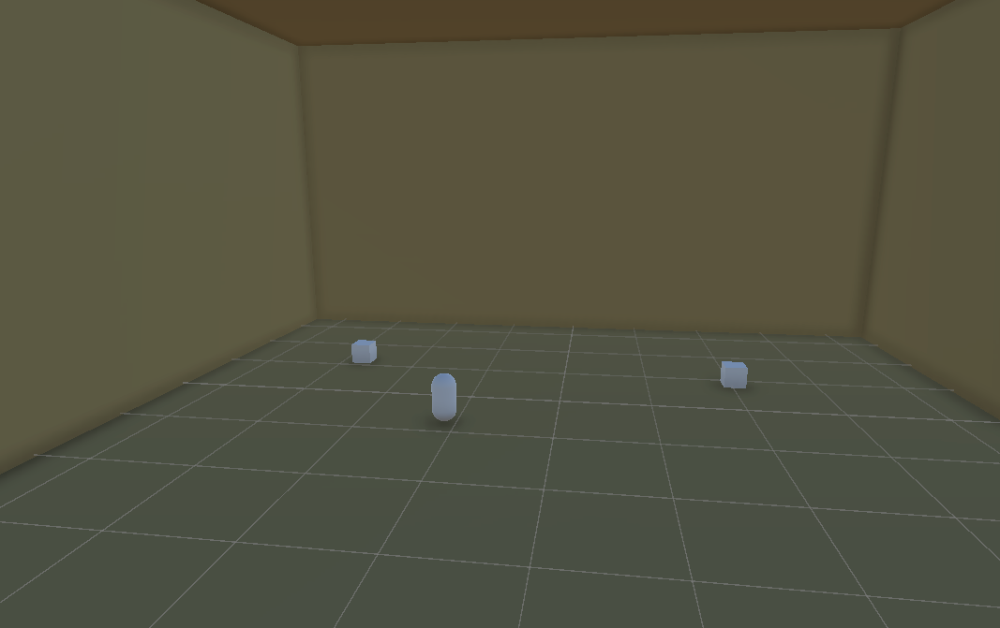
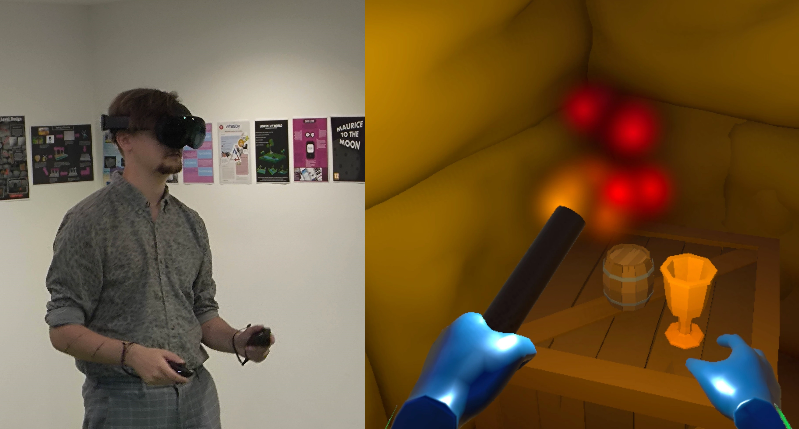

Time Heist - Group VR Game Project
Overview
VR Interactive Game
Date Started: April 2025
My Role: Developer
Software Used: Unity, C#

Download APK (for Meta Quest)
GitHubSection 1 | Introduction
1.1 Brief
This is a Group Game Project made in Year 1, Semester 2.
The goal is to develop a presentable, playable prototype of a game. The brief was as follows:
"Working in groups, create and develop a game that takes advantage of immersive and interactive technologies."
My role in this project was as Developer.
I worked in a team of 3 Developers and 3 Artists/Designers. However we all concepted our project as a group.
1.2 Concept and Inspiration
As a class, we all pitched ideas for the projects, which were voted on, and the top votes were then developed by seperate groups. I had the idea of creating a game that is similar to/inspired by games such as R.E.P.O. and Lethal Company, involving procedurally generated levels which contain loot, and your goal is to collect the highest value of loot.
My idea was highly voted, and after we picked our groups, we had a meeting to solidify our objective and what the game will be.
Group Project 3 – Meeting 1
Key Points: - Testing the team on VR, need a benchmark for motion sickness. - Making the game colorblind friendly: • Protanomaly, based on Dom’s colorblindness. • Then can build off of that and make normal color vision. Gameplay Loop: - Being chased by a monster, collect items of value to hit a quota. - Collect items of value, then solve puzzles to leave. - Timer on each level, collect items of value before the timer runs out. - Backpack system, most items can be stored aside from larger items. - Weight system, carrying too much can slow you down. - Oil lamp for lighting, can be stored on the hip. Design Choices: - Cave-in at pyramid/temple, collect items and leave before cave-in. - Could make stylized Tomb Raider design, more polygonal. - However, could be bad for UX as it can be bad on the eyes. - British Empire setting, grave robbing pyramids for museums. - Easter egg items, pics of devs on different items. Planned Features: - Shop will be added on the 2nd iteration: • Item shop for purchasing backpack slots, speed, maps, etc. Extra Tasks: - Hand textures. - Extra level. - Animated wall insects.
As per this meeting, we developed the core setting and goal for our game: procedurally generated pyramids, where you enter, collect loot, and leave before time runs out and the pyramid collapses.
We then collected both visual references and references for the procedural generation algorithm which I would be developing, some of which are shown below.


The project lead created a Gantt chart to organise what we would be doing for the duration of the project.

1.3 Tools and Software
Unity
Unity is the game engine we chose to use, due to its familiarity and stength of 2D tools and workflow
Discord
Discord is an online instant messaging and group chat application, this is what we used mainly to communicate and share ideas
Section 2 | Programming
2.1 Room Generation
Before I began programming, I setup a new Unity project, installed all the necessary packages and created a GitHub repository to use as my version control software. This Unity project was completely separate to the main Time Heist project, as I wanted the generator to be available separately on its own (V1 available on my GitHub).
Goal
The goal for the procedural generation is relatively simple: have multiple prefabs for rooms and hallways, which connect together seamlessly to generate an interesting level.
To achieve this, I researched many different procedural generation algorithms, some of which involved pathfinding, and some of which involved randomness.
At the end, I found a video tutorial about a procedural dungeon system in Unreal Engine 5 by REE Animation, which seemed to be a good base for what I needed.
However, our game is developed
in Unity, so I couldn't simply take and re-use the original code, I had to learn how the generation worked, and write my own C# code which worked around these principles.
2.1.1
Due to information from both this video and others, I decided that I want my generator to randomly place room prefabs connected to manually defined 'EntryPoints' in a convincingly seamless manner.
As such, my generator follows this basic order of operations:
The DungeonGenerator script in Unity procedurally generates a dungeon layout by starting from a predefined
startRoom and expanding it with rooms and hallways from a selected LevelSO Scriptable Object.
It randomly picks a level configuration, then repeatedly places new room prefabs by aligning their unconnected entry
points with those of existing rooms. Proper alignment is handled using rotation and position offsets, while overlap is
checked using colliders to ensure valid placement. Successfully placed rooms are added to the dungeon until a maximum
room count is reached. Once generation is complete, unconnected entry points are sealed with closed doors, and items
are spawned using an attached ItemSpawner component. UnityEvents are used to signal the start
and completion of dungeon generation, allowing for easy integration with other systems.
Entry Points are placed manually in the Unity Editor, with the Local Z-axis always pointing outwards to ensure correct rotation.
- Dungeon Initialisation -
Handles the initial setup of the dungeon by selecting a random level configuration, clearing previous data, and starting the asynchronous dungeon generation process. Utilises UnityEvents to notify when generation starts and prevents overlapping generation calls.
public void ResetDungeon()
{
if (activelyGenerating == false)
{
activelyGenerating = true;
onGenerationStarted.Invoke();
ClearLevel();
itemSpawner.DeleteAllItems();
if (levels.Count > 0)
{
levelData = levels[Random.Range(0, levels.Count)];
Debug.Log(levelData.levelName + "level selected");
}
SetUpLevelData(levelData);
StartCoroutine(GenerateDungeon());
}
else Debug.LogWarning("Dungeon is already generating!");
}
- Room Placement -
Controls the core logic for placing new rooms or hallways by selecting appropriate prefabs based on randomised probabilities, then prepares to connect these new rooms to existing ones through available entry points.
IEnumerator PlaceNextRoom()
{
GameObject sourceRoom = placedRooms[Random.Range(0, placedRooms.Count)];
if (levelData == null)
{
roomPrefabToPlace = masterPrefab;
}
else
{
if (Random.value < currentHallwayChance)
{
roomPrefabToPlace = levelData.hallwayPrefabs[Random.Range(0, levelData.hallwayPrefabs.Count)];
currentHallwayChance = hallwayChance * sequentialHallwayChanceMulti;
}
else
{
roomPrefabToPlace = levelData.roomPrefabs[Random.Range(0, levelData.roomPrefabs.Count)];
currentHallwayChance = hallwayChance;
}
}
// ...connection and transform alignment logic
}
- Room Alignment -
Aligns the new room to the existing dungeon layout by matching entry points’ positions and rotations, then checks for spatial overlaps to ensure no rooms collide before finalising placement.
Quaternion rotation = Quaternion.FromToRotation(selectedNewEntry.forward, -selectedSourceEntry.forward);
roomToSpawn.transform.rotation = rotation;
FixUpsideDown(roomToSpawn);
Vector3 entryGlobalPos = roomToSpawn.transform.TransformPoint(selectedNewEntry.localPosition);
Vector3 offset = selectedSourceEntry.position - entryGlobalPos;
roomToSpawn.transform.position = offset;
if (IsRoomOverlapping(roomToSpawn))
{
Destroy(roomToSpawn);
yield return null;
}
Issues & Fixes
Whilst my code results in something I am very happy with, and works great for this project, there were some issues I encountered.
For example,
I noticed that occasionally, rooms would spawn upside down.
I could not figure out what was going wrong in the room rotation logic to cuase this,
Therefore, I fixed this by adding the FixUpsideDown(GameObject roomToSpawn) check in the placement logic.
This detects if a room is upside down by checking if the room's Local Up Vector is aligned with the Global Down Vector by using a Dot Product threshold, and if so, it flips the room by rotating it 180 degrees on the local Z-axis.
I also encountered an issue where rooms would overlap (this can be seen in the demo gif above, as it is from an older version.)
I fixed this by implementing a collision detection system in the IsRoomOverlapping(GameObject room) method.
This uses Unity's Physics.OverlapBox function to check whether the newly spawned room's bounds (scaled slightly smaller to prevent false-positives) intersect with any trigger colliders on the Room Layer, and if so it is destroyed and re-attempted.
2.2 Game Logic
I had the responsibility of programming the game logic. This is mostly controlled in GameManager.cs, with key parts such as handling of currency and UI to their respective managers.
The GameManager handles the game's lifecycle, coordinating dungeon generation, game start/end conditions, player presence at the start zone, and timing logic. It connects to other components like DungeonGenerator, StartTrigger, and Timer to manage state transitions smoothly. The game begins only once the dungeon is fully generated and ends either when the timer runs out or the player leaves the start zone.
The StartGameCoroutine method showcases how the GameManager waits for dungeon generation to complete before activating the game, demonstrating smooth asynchronous control flow and clear separation between setup and gameplay logic.
public IEnumerator StartGameCoroutine()
{
while (isDungeonGenerating)
{
yield return null;
}
isGameActive = true;
if (timer != null)
{
timer.StartTimer();
}
onGameBegin.Invoke();
Debug.Log("Game started!");
}
My code uses a lot of UnityEvents, meaning that it is highly modular and event-driven, allowing different systems to communicate efficiently without tight coupling. This approach improves flexibility, makes the code easier to maintain, and enables seamless integration of new features by simply subscribing to or invoking these events.
public IEnumerator EndGameCoroutine()
{
if (isGameActive)
{
isGameActive = false;
onGameOver.Invoke();
Debug.Log("Game over!");
if (generator != null && playerAtStart)
{
timer.ResetTimer();
generator.ResetDungeon();
while (isDungeonGenerating)
{
yield return null;
}
}
else if (!playerAtStart)
{
SceneManager.LoadScene("FailMenu");
}
}
}
- Timer -

The timer is a key part of the game, and is handled by its own script (Timer.cs).
The Timer class manages a countdown timer for the game, updating a UI text element to display remaining time and changing its colour based on warning and critical thresholds. It integrates with the GameManager via UnityEvents, starting and stopping automatically when the game begins or ends, while also supporting pause, resume, and reset functionality for flexible control over timing during gameplay.
- UIManager -
The UIManager script is responsible for updating and managing the game's user interface elements.
It dynamically updates the displayed money and item count by querying the MoneyManager singleton, reflecting the player’s current in-game earnings and collected items.
Additionally, it handles scene transitions such as starting the game, returning to the menu, showing the win screen, and quitting the application.
- MoneyManager -
private readonly HashSet<GameObject> collectedItems = new HashSet<GameObject>();
private void AddTreasureToList(GameObject item)
{
if (item != null && collectedItems.Add(item))
{
Debug.Log($"[MoneyManager] Treasure added: {item.name}");
UpdateValueRecovered();
UpdateUI();
}
}
The MoneyManager is a singleton responsible for tracking all treasure items collected by the player throughout the game.
It maintains a unique collection of treasures using a HashSet to avoid duplicates, updating the total value recovered by summing the values from each collected item’s ObjectInformation component.
The class also communicates changes to the UI by notifying the UIManager to update displayed money and item counts, ensuring the player’s progress is accurately reflected in real-time.
2.3 Item Spawning

private void SpawnItemAtPoint(Transform spawnPoint)
{
if (Random.Range(0, 3) != 0)
return;
GameObject itemToSpawn = items[Random.Range(0, items.Count)];
Vector3 spawnPos = spawnPoint.position + spawnOffset;
GameObject spawnedItem = Instantiate(itemToSpawn, spawnPos, spawnPoint.rotation);
Collider itemCollider = spawnedItem.GetComponent();
if (itemCollider != null)
{
float bottomOffset = itemCollider.bounds.min.y - spawnedItem.transform.position.y;
Vector3 adjustedPosition = spawnPos;
adjustedPosition.y -= bottomOffset;
adjustedPosition += colliderBottomOffset;
spawnedItem.transform.position = adjustedPosition;
}
if (spawnedItemsParent != null)
spawnedItem.transform.SetParent(spawnedItemsParent);
spawnedItems.Add(spawnedItem);
}
The ItemSpawner class manages the procedural placement of collectible items within the dungeon environment.
It identifies designated spawn points tagged as ItemSpawn within each generated room and attempts to spawn items at these locations with a random chance, ensuring variety and unpredictability in item placement.
To achieve precise positioning, the spawner calculates the vertical offset based on the item’s collider bounds, adjusting the spawn height so items rest correctly on the floor or surface, with colliderBottomOffset.
Spawned items are parented under a specified transform for organisation in the inspector, and the spawner maintains an internal list of all currently spawned items for easy management, including methods to add or remove items dynamically during gameplay.
The spawning process is implemented as a coroutine, allowing it to run smoothly over multiple frames without freezing the game, which is critical for maintaining performance in mobile Virtual Reality.
Section 3 | Playtesting in VR
Following the Gantt Chart, starting from week 4, we invited both team members and external participants to playtest the game. This process was crucial to gather valuable user feedback, identify potential issues early, and refine the VR experience to ensure it was stable and presentation-ready for the Code & Canvas Exhibition.
Playtesting allowed us to fine-tune key settings such as player speed and level size. It also uncovered bugs, including holsters not tracking accurately to real-world positions and object damage failing in specific areas, all of which were addressed in preparation for the exhibition.
The most significant issue revealed early on was performance. To tackle this, we lowered light-quality settings considerably and implemented a culling system that disables lights and renderers outside the player’s view, resulting in a dramatic performance boost.
The exhibition provided access to many playtesters, especially first-time VR users. Their feedback highlighted persistent challenges, including difficulties with depth perception and unintuitive controls, which we thoroughly documented for future improvements.
Section 4 | Reflection
Developing Time Heist was an intensive and highly practical learning experience. It was our first serious attempt at creating a complete VR game, and we approached it with a clear focus: to build something playable, stable, and presentable within the project timeframe. From the earliest stages of planning through to exhibition day, our team made consistent progress.
The project culminated at the Code & Canvas Exhibition, where we had the opportunity to share the game with the public and industry professionals, and receive direct feedback from a wide variety of players — including those who had never used VR before. We were proud to receive the Team Choice (1st Years) award, which showed that our peers and others recognised the work and ambition behind the project.
Technical and Design Reflections
Designing for VR is not as intuitive as designing for flatscreen 3D. Early in development, we realised how much needed to be reconsidered: UI, player input, interaction techniques, and even basic navigation all behave differently in VR. Some of our initial ideas had to be scrapped or redesigned when we saw how unintuitive they felt in practice. In particular, there were frequent issues around object interaction — grabbing, dropping, and holstering — that required multiple attempts to feel somewhat intuitive.
One of the most difficult aspects of the project was managing performance. VR demands stable, high frame rates, and the mobile headset we were targeting had very limited resources.
Beyond technical issues, playtesting revealed gaps in our UX. For many users, especially those unfamiliar with VR, depth perception was difficult — making it harder to judge distances and interact with objects precisely. These challenges made it clear how crucial accessibility and intuitiveness are in VR design, especially for onboarding new players.
Teamwork, Communication, and Scope
As a whole, the entire team worked great together, and it was by far the most enjoyable team experience yet. We communicated often and well - with a mix of in-person and online meetings, and, overall we understood exactly what was expected of us. There were of course some issues, however nothing disastrous.
One of the more subtle lessons was around scope control. Our original ideas for Time Heist included puzzles, a proper tutorial, and additional gameplay systems such as time-based challenges. We had to cut or simplify many of these features to stay within the project timeline. In future projects, we’ll be more deliberate about breaking down features into modular, testable systems from the beginning.
Further Development
Despite some technical compromises, Time Heist reached a solid level of functionality and polish, particularly for our first VR project. It gave us a working foundation that we could feasibly expand upon, as well as a clear understanding of what it takes to build and deliver an interactive VR experience.
Given another 4 to 6 weeks, we could refine some of the systems that currently feel rigid or incomplete — such as improving the responsiveness of object interactions and creating a clearer onboarding process for new players. A couple more weeks on top of that would likely be necessary to bring the overall polish up to a more professional standard. This would include sound design, UI animation, environmental effects, and better visual or audio feedback for player actions.
This project also highlighted several areas I’d like to explore further in future work:
- > UX and interaction design specifically for VR, especially with first-time users in mind
- > Mobile performance profiling and memory management in Unity
- > System architecture planning to reduce unnecessary complexity and improve modularity
These skills would directly benefit any future projects I take on, particularly those in VR or AR, where performance and user interaction are especially critical.
Overall, Time Heist has laid a strong foundation for me as a developer. It exceeded my expectations and demonstrated what our team is capable of. I'm proud of what we presented at the exhibition — especially winning the Team Choice (1st Years) award — and excited to build on this momentum in future projects.

1.6 Further Development
Following my reflection, I have outlined a plan that I could follow to rework the game from the ground up:
Sprint 1:
- Strip game down to its core mechanics, preserving best-performing scripts
- Replace Touch Handling with a more optimised premade asset
- Redesign and rewrite grid system for performance
- Rewrite placement system to make more intuitive
Sprint 2:
- Using the new grid and placement, rewrite the shop spawning to be controlled by a single manager
- Rework player and Enemy Controllers
- Rewrite attack system
Sprint 3:
- Polish up previous scripts
- Create all new types of entities
- Polish UI
1.7 Key Tasks & Dependencies
Art: Must be completed before main menu & UI can be polished, before sprite animations can be finalised, and before background elements can be added.
Shop System: Must be entirely reworked before expanding scope, as it is very hard to build upon right now.
Animations: I could not get sprite animations working correctly, this needs to be fixed before the game can be considered polished.
References
[1.2.1] How to Make a Pixel Art Frog (2023). [Art]. Go Real Games, LLC. Retrieved from https://www.megavoxels.com/learn/how-to-make-a-pixel-art-frog/
[1.2.2] Pixel Art Top Down - Basic. [Art]. Cainos. Retrieved from https://cainos.itch.io/pixel-art-top-down-basic/
[1.2.4] This is Pixel Art 32 (2024). [Art]. The_PixelPrysm. Retrieved from https://www.reddit.com/r/PixelArt/comments/1aprcl3/this_is_pixel_art_32/